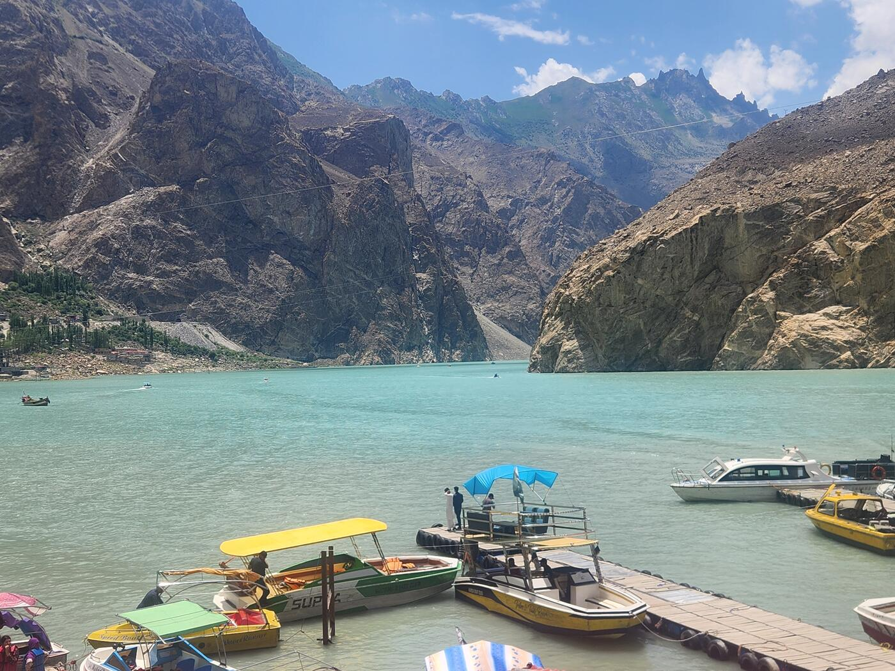
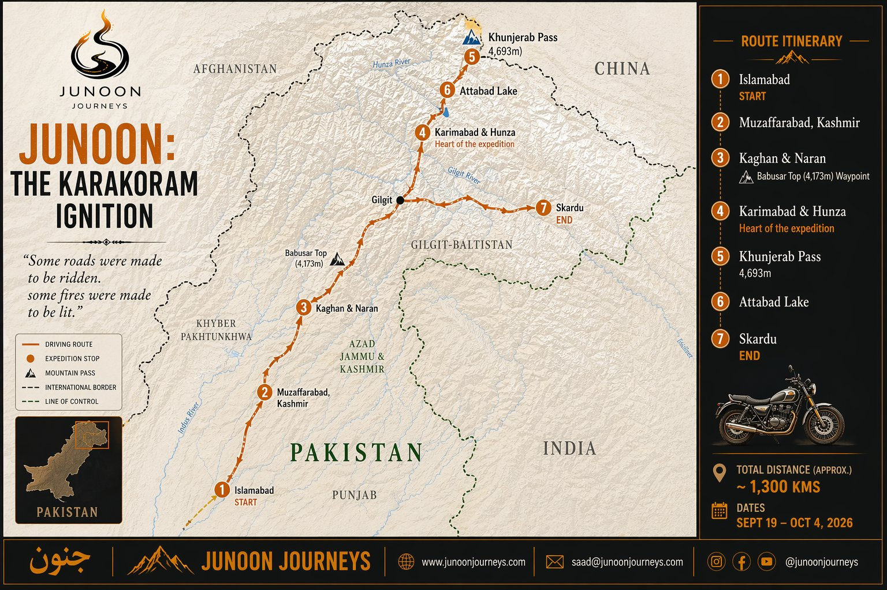
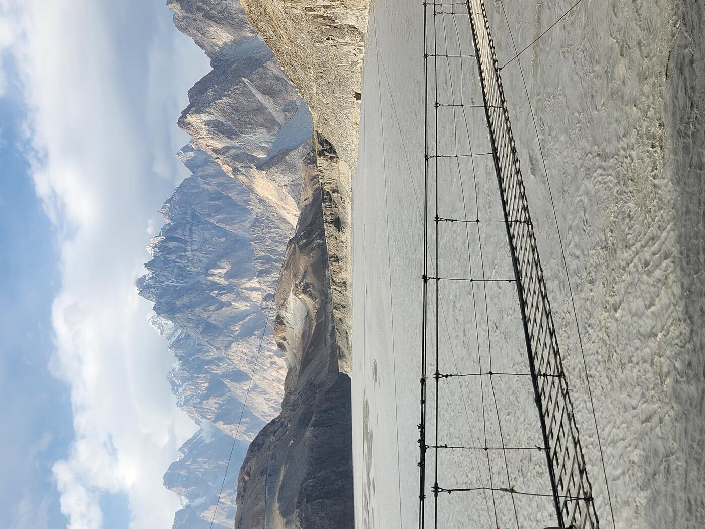
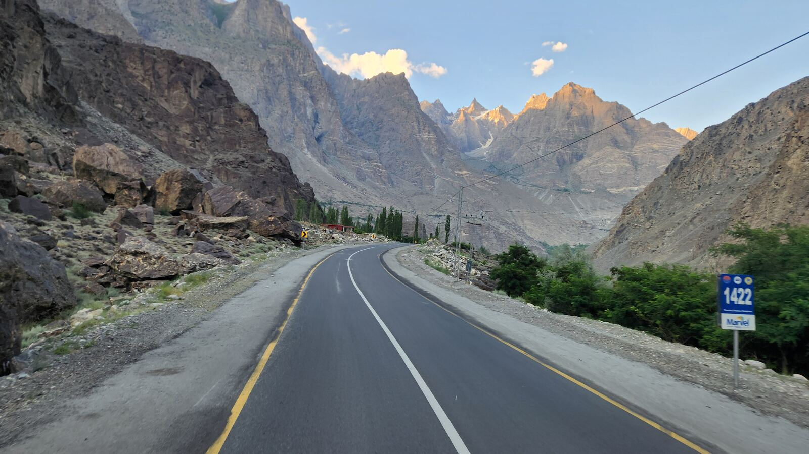
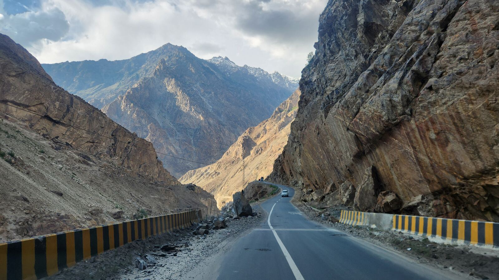
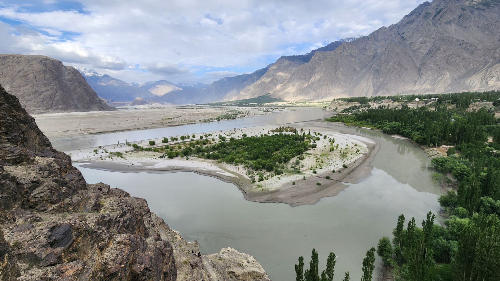
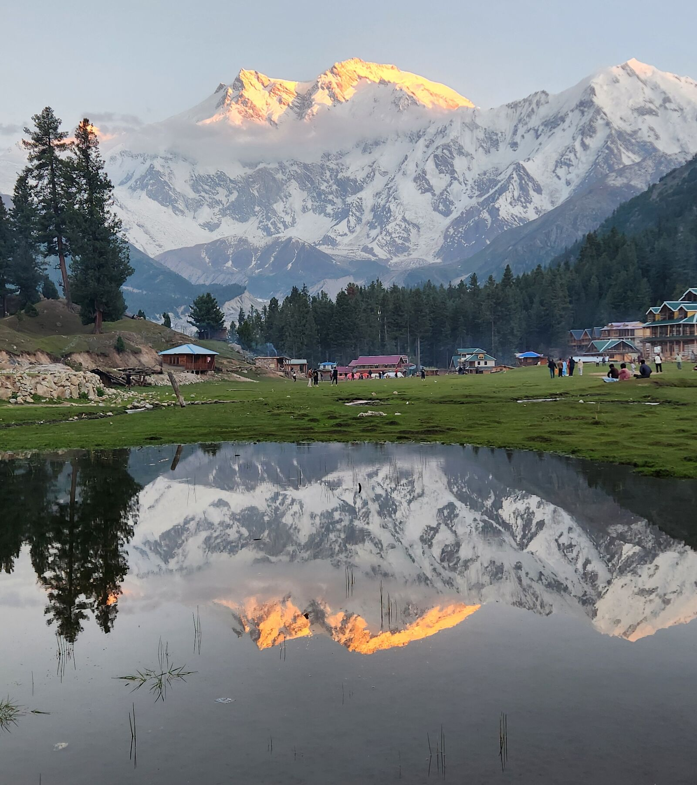

Islamabad to Skardu. 15 days. September 2026.
Islamabad to Skardu. Fifteen days.
The Karakoram Highway runs 1,300 kilometers from Punjab through the valleys of Kashmir, over Babusar Top at 4,173 meters, north through Hunza to Khunjerab Pass at the Chinese border — the highest paved international crossing on earth — then south to Skardu at the base of K2. The road took twenty years to build and cost nearly a thousand lives in construction alone. From ancient fortresses guarding the pass for centuries to some of Pakistan's 7,000 glaciers — more than any country outside the polar regions — the sheer scale of a land layered in history will shock you all from your seat.
With 360 views of some of the world's tallest mountains, you'll cross a corridor that has been moving people for over a thousand years. Traders, pilgrims, wanderers. It has always drawn those who cannot stay still.





For those who aren't ready to stop. An optional extension beyond Skardu into two of the most extraordinary places in the subcontinent.
Available based on confirmed interest. Note it on your application.

Note interest on your application — final itinerary shared with confirmed participants.